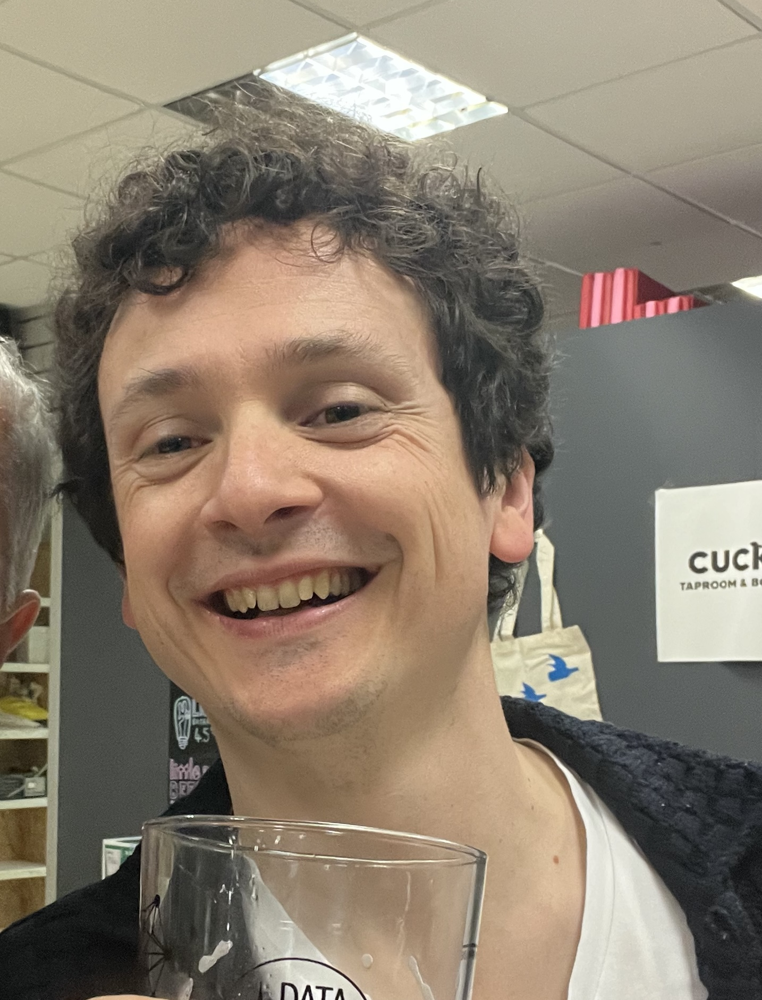
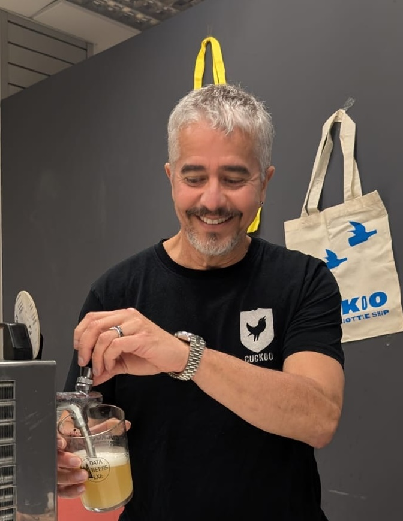

The Organisers
The volunteers behind DataBeers Exeter
Meet the team
DataBeers Exeter is run by two academics from the University of Exeter who are passionate about building a strong, welcoming data community across Devon and the wider South West.

Federico Botta
Co-organiser
Senior Lecturer in Data Science, University of Exeter
Fellow of the Alan Turing Institute and holder of one of the inaugural No. 10 Downing Street Data Science Fellowships. His research applies data science, network theory, and computational social science to study human behaviour and mobility at scale.

Ronaldo Menezes
Co-organiser
Professor of Data and Network Science, University of Exeter
Director of the BioComplex Laboratory at the University of Exeter. His research focuses on network science, complex systems, and human dynamics. Co-editor-in-chief of the journal Applied Network Science (Springer Nature).
Get involved
We're always looking for people to help grow the DataBeers Exeter community. Here are some ways you can get involved:
Give a talk
Have a data project, tool, or story to share? We welcome speakers of all experience levels. 20 slides, 20 seconds each. No questions, no pressure.
Sponsor
Organisations can support the community by sponsoring drinks or the event itself. Get in touch to discuss how we can recognise your contribution.
Help organise
Interested in joining the organising team? We'd love to have you. It is light-touch, mainly helping with logistics and outreach.
Our Partners
DataBeers Exeter is made possible with the support of local partners who share our commitment to community and good beer.
Cuckoo Tap Room & Bottle Shop
Venue Partner

Cuckoo is an independent tap room and bottle shop based in the heart of Exeter. [Placeholder: add description of Cuckoo, their ethos, and what makes them a great partner for DataBeers Exeter.]
Find them
Cuckoo Tap Room & Bottle Shop
25 Paris Street
Exeter, EX1 2JB